import rasterio
import warnings
warnings.filterwarnings('ignore')Change of Support: Surface to Vector
from rasterio.mask import mask
import geopandas as gpd
import fiona
import pandas as pdras = 'data/stanford-td754wr4701-geotiff.tiff' # already interpolated but we will treat it as "data"shp = 'data/tl_2022_06073_faces.shp'gdf = gpd.read_file(shp)gdf.shape(57076, 46)gdf.head()| TFID | STATEFP20 | COUNTYFP20 | TRACTCE20 | BLKGRPCE20 | BLOCKCE20 | SUFFIX1CE | ZCTA5CE20 | UACE20 | PUMACE20 | ... | METDIVFP | CNECTAFP | NECTAFP | NCTADVFP | LWFLAG | OFFSET | ATOTAL | INTPTLAT | INTPTLON | geometry | |
|---|---|---|---|---|---|---|---|---|---|---|---|---|---|---|---|---|---|---|---|---|---|
| 0 | 216102682 | 06 | 073 | 016302 | 2 | 2010 | None | 92021 | 78661 | 07313 | ... | None | None | None | None | L | N | 22408 | +32.8008387 | -116.9453919 | POLYGON ((-116.94621 32.80044, -116.94621 32.8... |
| 1 | 216102683 | 06 | 073 | 016302 | 2 | 2006 | None | 92021 | 78661 | 07313 | ... | None | None | None | None | L | N | 29220 | +32.8008392 | -116.9472819 | POLYGON ((-116.94836 32.80045, -116.94836 32.8... |
| 2 | 216102684 | 06 | 073 | 016302 | 2 | 2007 | None | 92021 | 78661 | 07313 | ... | None | None | None | None | L | N | 18605 | +32.8012731 | -116.9487743 | POLYGON ((-116.94919 32.80063, -116.94919 32.8... |
| 3 | 226900092 | 06 | 073 | 016301 | 2 | 2003 | None | 92020 | 78661 | 07313 | ... | None | None | None | None | L | N | 19567 | +32.7999949 | -116.9608656 | POLYGON ((-116.96140 32.80088, -116.96073 32.8... |
| 4 | 263464856 | 06 | 073 | 016301 | 2 | 2001 | None | 92020 | 78661 | 07313 | ... | None | None | None | None | L | N | 23766 | +32.8019391 | -116.9605314 | POLYGON ((-116.96149 32.80194, -116.96141 32.8... |
5 rows × 46 columns
county = gdf.dissolve(by='COUNTYFP20')county.plot()<Axes: >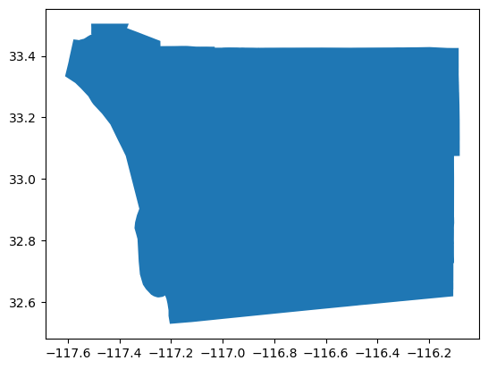
rast = rasterio.open(ras)county = county.to_crs(rast.crs)county.plot()<Axes: >rast.crsCRS.from_epsg(4326)coords = gdf.geometry
src = rast
df = county
import matplotlib.pyplot as plt
from rasterio.plot import showclipped_array, clipped_transform = mask(dataset=src, shapes=coords, crop=True)
df = df.to_crs(src.crs)
out_meta = src.meta.copy()
out_meta.update({"driver": "GTiff",
"height": clipped_array.shape[1],
"width": clipped_array.shape[2],
"transform": clipped_transform})
out_tif= "clipped_example.tif"
with rasterio.open(out_tif, "w", **out_meta) as dest:
dest.write(clipped_array)
clipped = rasterio.open(out_tif)
fig, ax = plt.subplots(figsize=(8, 6))
p1 = df.plot(color=None,facecolor='none',edgecolor='red',linewidth = 2,ax=ax)
show(clipped, ax=ax)
ax.axis('off');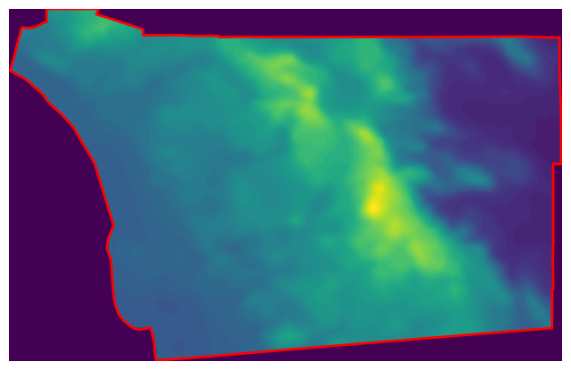
clipped<open DatasetReader name='clipped_example.tif' mode='r'>import rioxarrayd = rioxarray.open_rasterio("clipped_example.tif")d<xarray.DataArray (band: 1, y: 336, x: 527)>
[177072 values with dtype=uint8]
Coordinates:
* band (band) int64 1
* x (x) float64 -117.6 -117.6 -117.6 ... -116.1 -116.1 -116.1
* y (y) float64 33.5 33.5 33.5 33.5 ... 32.54 32.53 32.53 32.53
spatial_ref int64 0
Attributes:
AREA_OR_POINT: Area
scale_factor: 1.0
add_offset: 0.0d.plot()<matplotlib.collections.QuadMesh at 0x7f334febdcd0>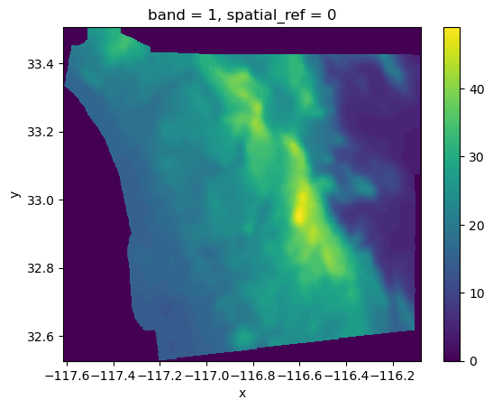
d.values.max()49d.plot()<matplotlib.collections.QuadMesh at 0x7f334fd42610>
type(d)xarray.core.dataarray.DataArrayd.dims('band', 'y', 'x')d.values.mean()15.630963675792898import numpynumpy.median(d.values)17.0d.values.shape(1, 336, 527)d.plot()<matplotlib.collections.QuadMesh at 0x7f334fd89b10>
d.plot.hist()(array([44849., 17108., 10090., 29702., 31657., 23051., 11786., 6411.,
2011., 407.]),
array([ 0. , 4.9, 9.8, 14.7, 19.6, 24.5, 29.4, 34.3, 39.2, 44.1, 49. ]),
<BarContainer object of 10 artists>)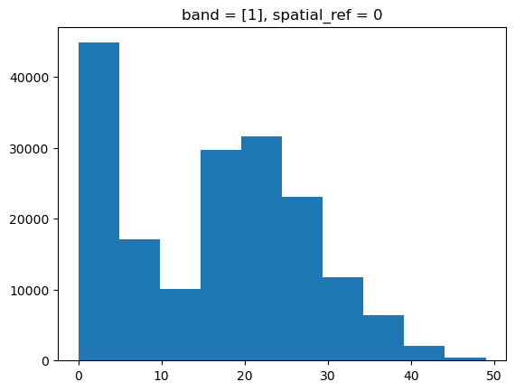
type(d)xarray.core.dataarray.DataArrayimport rasterstatsgdf.head()| TFID | STATEFP20 | COUNTYFP20 | TRACTCE20 | BLKGRPCE20 | BLOCKCE20 | SUFFIX1CE | ZCTA5CE20 | UACE20 | PUMACE20 | ... | METDIVFP | CNECTAFP | NECTAFP | NCTADVFP | LWFLAG | OFFSET | ATOTAL | INTPTLAT | INTPTLON | geometry | |
|---|---|---|---|---|---|---|---|---|---|---|---|---|---|---|---|---|---|---|---|---|---|
| 0 | 216102682 | 06 | 073 | 016302 | 2 | 2010 | None | 92021 | 78661 | 07313 | ... | None | None | None | None | L | N | 22408 | +32.8008387 | -116.9453919 | POLYGON ((-116.94621 32.80044, -116.94621 32.8... |
| 1 | 216102683 | 06 | 073 | 016302 | 2 | 2006 | None | 92021 | 78661 | 07313 | ... | None | None | None | None | L | N | 29220 | +32.8008392 | -116.9472819 | POLYGON ((-116.94836 32.80045, -116.94836 32.8... |
| 2 | 216102684 | 06 | 073 | 016302 | 2 | 2007 | None | 92021 | 78661 | 07313 | ... | None | None | None | None | L | N | 18605 | +32.8012731 | -116.9487743 | POLYGON ((-116.94919 32.80063, -116.94919 32.8... |
| 3 | 226900092 | 06 | 073 | 016301 | 2 | 2003 | None | 92020 | 78661 | 07313 | ... | None | None | None | None | L | N | 19567 | +32.7999949 | -116.9608656 | POLYGON ((-116.96140 32.80088, -116.96073 32.8... |
| 4 | 263464856 | 06 | 073 | 016301 | 2 | 2001 | None | 92020 | 78661 | 07313 | ... | None | None | None | None | L | N | 23766 | +32.8019391 | -116.9605314 | POLYGON ((-116.96149 32.80194, -116.96141 32.8... |
5 rows × 46 columns
tracts = gdf.dissolve(by='TRACTCE20')tracts.shape(737, 45)tracts.plot()<Axes: >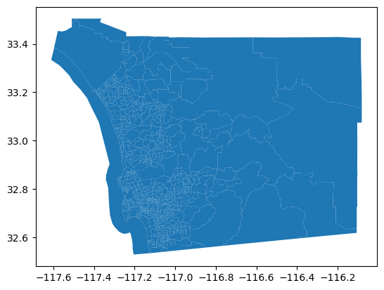
Surface to Polygon Interpolation
Spatial Join on Centroid
cents = tracts.centroidcoord_list = [(x, y) for x, y in zip(cents.x, cents.y)]
tracts['centest'] = [x[0] for x in clipped.sample(coord_list)]
tracts.head()| geometry | TFID | STATEFP20 | COUNTYFP20 | BLKGRPCE20 | BLOCKCE20 | SUFFIX1CE | ZCTA5CE20 | UACE20 | PUMACE20 | ... | METDIVFP | CNECTAFP | NECTAFP | NCTADVFP | LWFLAG | OFFSET | ATOTAL | INTPTLAT | INTPTLON | centest | |
|---|---|---|---|---|---|---|---|---|---|---|---|---|---|---|---|---|---|---|---|---|---|
| TRACTCE20 | |||||||||||||||||||||
| 000100 | POLYGON ((-117.18981 32.74761, -117.19013 32.7... | 265709739 | 06 | 073 | 2 | 2007 | None | 92103 | 78661 | 07316 | ... | None | None | None | None | L | N | 112711 | +32.7537001 | -117.1899099 | 15 |
| 000201 | POLYGON ((-117.17483 32.74987, -117.17501 32.7... | 216103299 | 06 | 073 | 2 | 2005 | None | 92103 | 78661 | 07316 | ... | None | None | None | None | L | N | 11341 | +32.7553182 | -117.1727763 | 15 |
| 000202 | POLYGON ((-117.17887 32.74009, -117.17917 32.7... | 216103238 | 06 | 073 | 1 | 1009 | None | 92103 | 78661 | 07316 | ... | None | None | None | None | L | N | 13631 | +32.7428449 | -117.1753608 | 15 |
| 000301 | POLYGON ((-117.16418 32.74077, -117.16471 32.7... | 216103144 | 06 | 073 | 3 | 3003 | None | 92103 | 78661 | 07316 | ... | None | None | None | None | L | N | 6373 | +32.7411142 | -117.1644494 | 15 |
| 000302 | POLYGON ((-117.16382 32.74146, -117.16382 32.7... | 216103151 | 06 | 073 | 2 | 2005 | None | 92103 | 78661 | 07316 | ... | None | None | None | None | L | N | 6488 | +32.7411150 | -117.1635466 | 15 |
5 rows × 46 columns
tracts['centroid'] = tracts.centroid
tracts.set_geometry('centroid', inplace=True)tracts.plot(column='centest', legend=True);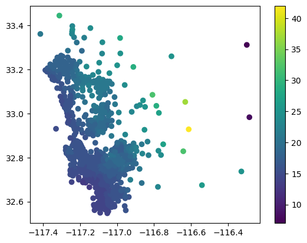
tracts.set_geometry('geometry', inplace=True)
tracts.plot(column='centest', legend=True);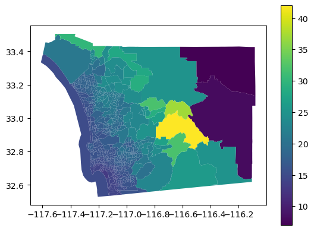
Zonal Methods of Surface to Area Interpolation
from rasterstats import zonal_stats
tstats = zonal_stats(tracts, "clipped_example.tif",
stats="count min mean max median")
#elevations2 = zonal_stats(
# sd_tracts.to_crs(dem.rio.crs), # Geotable with zones
# "../data/nasadem/nasadem_sd.tif", # Path to surface file
#)
#elevations2 = pandas.DataFrame(elevations2)tstats[:5][{'min': 15.0, 'max': 15.0, 'mean': 15.0, 'count': 17, 'median': 15.0},
{'min': 15.0, 'max': 15.0, 'mean': 15.0, 'count': 11, 'median': 15.0},
{'min': 15.0, 'max': 15.0, 'mean': 15.0, 'count': 14, 'median': 15.0},
{'min': 15.0, 'max': 15.0, 'mean': 15.0, 'count': 4, 'median': 15.0},
{'min': 15.0, 'max': 16.0, 'mean': 15.5, 'count': 8, 'median': 15.5}]tstats = pd.DataFrame(tstats)tstats.head()| min | max | mean | count | median | |
|---|---|---|---|---|---|
| 0 | 15.0 | 15.0 | 15.0 | 17 | 15.0 |
| 1 | 15.0 | 15.0 | 15.0 | 11 | 15.0 |
| 2 | 15.0 | 15.0 | 15.0 | 14 | 15.0 |
| 3 | 15.0 | 15.0 | 15.0 | 4 | 15.0 |
| 4 | 15.0 | 16.0 | 15.5 | 8 | 15.5 |
tstats.shape(737, 5)tracts.shape(737, 47)tracts['mean'] = tstats['mean'].values
tracts.plot(column='mean', legend=True);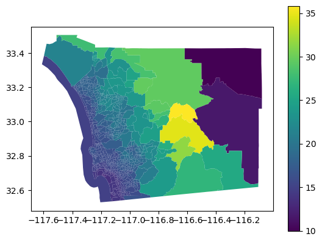
tracts['median'] = tstats['median'].values
tracts.plot(column='median', legend=True);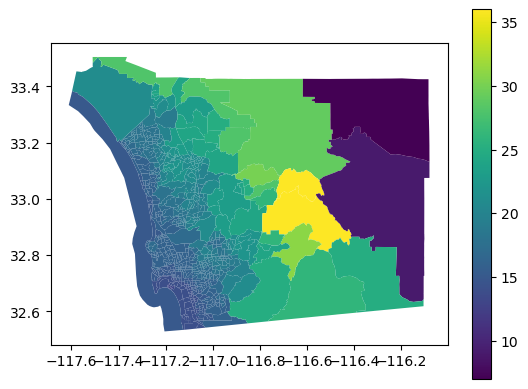
tracts['range'] = tstats['max'].values - tstats['min'].values
tracts.plot(column='range', legend=True);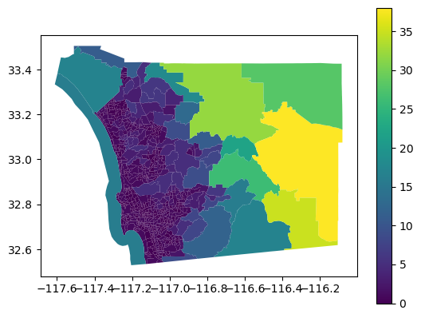
import seaborn as snssns.scatterplot(data=tracts, x='centest', y='mean')
plt.plot([10, 40], [10, 40]);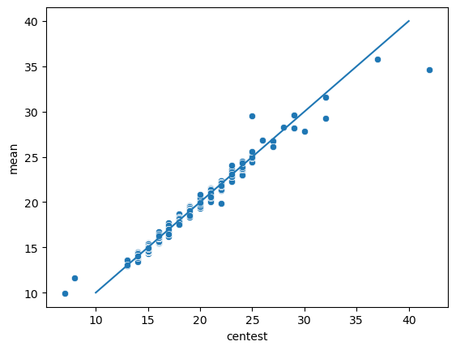
sns.scatterplot(data=tracts, x='median', y='mean')##
plt.plot([10, 40], [10, 40]);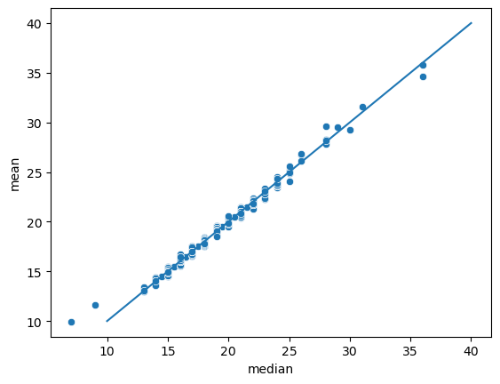